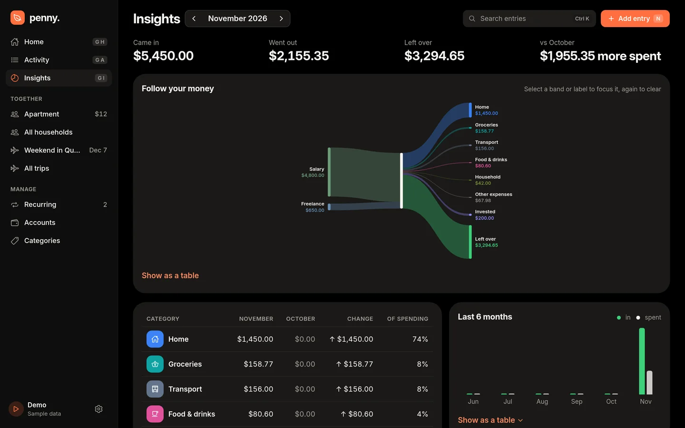
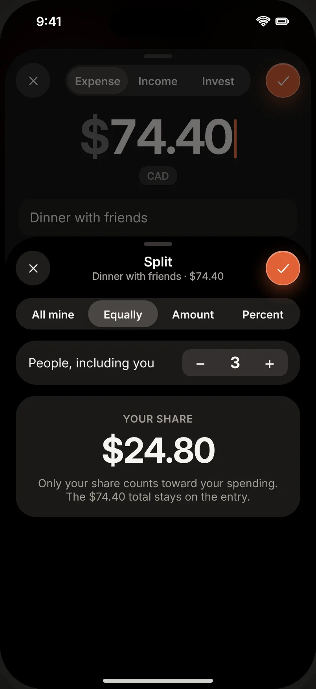
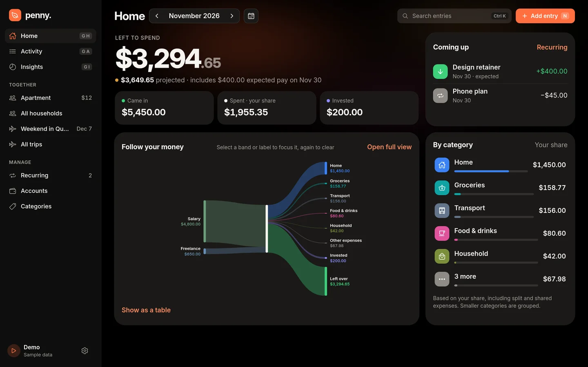

Self-hosted expense tracking
A little more clarity about your money.
Track expenses, income and investment contributions on iPhone, iPad and the web. Split the bill, keep the receipt, and see where it all went, on a server you run yourself.
- Web app
- Native iPhone & iPad
- No bank connection

Overview
Your month, at a glance.
Left to spend, front and centre: what came in, what you spent and what you invested. Expected pay already counts toward a clearly labeled projection, so a late-month payday is in the picture before it arrives.
-
Calendar and categories
See which days and categories the month went to, then filter the entries behind them.
-
Investments, kept apart
Contributions get their own total and never count as spending.
-
Recurring, previewed
Upcoming bills and paydays appear in the calendar before they happen.
Insights
Follow your money.
An interactive flow connects every source of income to spending, investments and what's left over. Split expenses count only your share, so the picture reflects your spending, not the whole bill.
Your share
Band widths follow what you actually paid.
Search everything
Any entry, from anywhere, with ⌘K.



Entries
Add it, split it, keep the receipt.
Record an expense, income or investment contribution in a few taps. Make it recurring, attach the receipt, and split it however the bill was really shared.
-
Split any way
Equally, by amount or by percentage. The total stays on the entry; your reports count your share.
-
Receipts, encrypted
Attach a photo or PDF. It's encrypted at rest on your server and read by on-server OCR.
-
Forward receipts by email Soon
A private address per person; order confirmations land in your receipt inbox.
Apps
On your phone, in your browser, on your server.
A native SwiftUI app for iPhone and iPad and a fast web app for everything else, kept in sync by a .NET and PostgreSQL server you host.
Face ID lock
Biometric app lock on iPhone and iPad.
Offline-first
Edits save on the device and sync when you're back.
Your sign-in
Local accounts or your own OpenID Connect provider.
Widgets
Left to spend on your Home Screen.



Together
Personal finances, shared plans.
Record a shared expense once. Everyone's reports keep only their own share.
-
Households
Rent and bills split equally, by amount or by percentage, with monthly balances and suggested reimbursements.
-
Trips
Invite friends with a short-lived code, add expenses together and settle up at the end.
-
Your categories and accounts
Your own names, colours and icons; payment accounts tracked by hand.
Self-host
Run it yourself in a few minutes.
One Compose file starts PostgreSQL, the API and the web app; there's a NixOS module too. Fill in the secrets, point your reverse proxy at it, and open Penny.
# deploy/.env from deploy/.env.example: the public origin and two secrets
$ docker compose -f deploy/compose.yaml up -d --wait
✔ Container penny-postgres-1 Healthy
✔ Container penny-penny-render-1 Healthy
✔ Container penny-api-1 Healthy
✔ Container penny-web-1 HealthyPenny tracks investment contributions, not portfolio performance, and never connects to your bank.